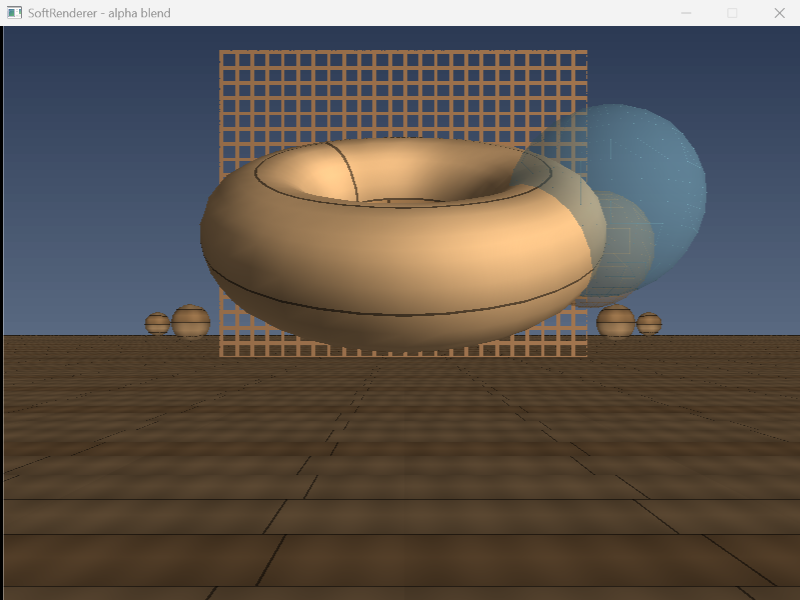
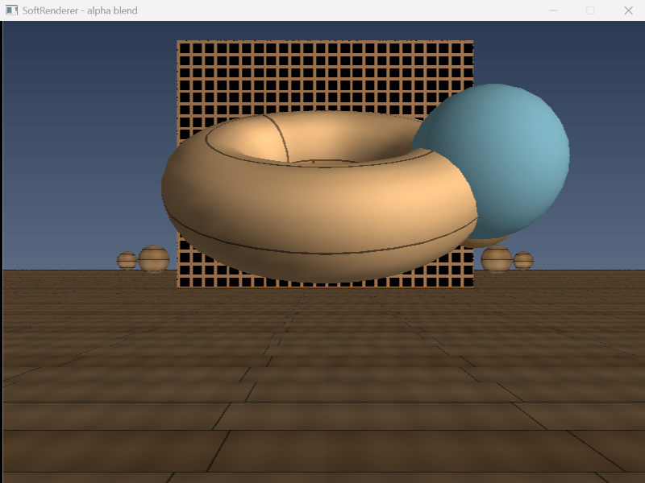

透明度：一刀切的剪裁，与像调浓度的混合
到第 12 步为止，画面里全是实心物体：每个通过深度测试的片元都被直接覆盖上去。第 13 步补上两种「不实心」的画法 —— 以及它们带来的第一个「顺序会改变结果」的坑。
插图全部是内联 SVG 手绘，不依赖任何库；对照截图是程序真实渲染出来的，不是示意图。
最该慢读的是第二部分（混合不可交换）——它是「渲染排序」存在的唯一理由。第四部分是三个「alpha 被悄悄吃掉」的隐蔽 bug，症状全是「看起来没生效」。
01两种「不实心」
第 13 步就两个效果，但它们机制完全不同，混着记一定会出错。
| Alpha 测试 | 颜色混合 | |
|---|---|---|
| 片元的命运 | 二选一：整个留下 or 整个丢掉 | 一定留下，但不是覆盖 |
| 有没有中间状态 | 没有（不是 0 就是 1） | 有（α 从 0 到 1 连续变） |
| 丢掉的写不写深度 | 不写 | （不存在「丢掉」） |
| 典型效果 | 镂空：树叶、栅栏、铁丝网 | 半透明：玻璃、水、火焰 |
1.1 Alpha 测试：整个片元丢掉
bool alpha_test(uint8_t alpha, uint8_t threshold)
{
// 只有一条判据：alpha 达不到阈值就丢掉（默认阈值 128）
return alpha >= threshold;
}返回 false 时，片元不写颜色、不写深度 —— 等于它从来没来过。所以镂空板的洞是真的洞：背后的天空、地板照常画出来。
同一张「树叶」贴图，阈值调低叶子更密、调高叶子更稀疏。这就是很多引擎里 Alpha Cutoff 滑条的来历。
1.2 颜色混合：加权平均
输出 = 源 × α + 目标 × (1 − α) a = alpha / 255a = 1→ 全是不透明的源，等价于直接覆盖a = 0→ 全是目标，等于没画a = 0.5→ 各占一半，能同时看见源和目标
源 × α + 目标 × (1−α)。static_cast<uint8_t> 是截断（向下取整）。不加 0.5 会让每个像素系统性偏暗一点点 —— 一层看不出来，几十层半透明叠起来就是整体发灰。这是颜色计算里的通用习惯。
02混合不可交换 → 半透明必须从远到近
这是本步最重要的一节。 前面所有步骤，物体画的顺序都无所谓（有深度测试兜底）。这一步第一次出现「顺序会改变结果」。
2.1 为什么不可交换
over 运算不满足交换律：A 混 B ≠ B 混 A。直觉上，每一步混合都在「往当前背景上再盖一层半透明的纸」—— 后盖的纸，是盖在「已经包含前一张纸」的背景上。把两次混合展开：
先 A 后 B：
C2 = cB·aB + cA·aA·(1−aB) + C0·(1−aA)(1−aB)
↑ ↑ ↑
B 在最外层 A 被 B 挡掉一部分 底色系数（与顺序无关）
先 B 后 A： cA、cB 的系数互换 → 除非 aA = aB，否则结果不同画的顺序 = 从「最远 / 最底层」到「最近 / 最上层」。半透明物体必须从远到近画。
2.2 半透明物体不写深度
半透明物体除了排序，还有一条硬约束：不写深度（write_depth = false）。
为什么？深度缓冲记录的是「这个像素被谁占据了」。半透明物体不占据像素 —— 它只是路过，把自己叠上去。如果它写了深度，后画的一个更近的半透明片元就会被它挡掉，玻璃就变成一块死色。
但它仍然要做深度测试：
// 半透明物体也要做深度测试 ——
// 它虽然不写深度，但必须知道「自己前面有没有不透明的东西挡着」，
// 被挡住的部分就不该混进来（否则会把藏在前景后面的玻璃画到前面来）。
if (z >= fb.depth_at(x, y)) continue;不透明物体：既测又写。半透明物体：只测不写。
- 测：判断自己有没有被前面的不透明物挡住。
- 不写：别霸占像素，让后面更近的半透明层照样能叠上来。
2.3 排序：不透明在前，半透明从远到近
std::vector<int> Scene::build_draw_order(const Vec3& eye) const
{
// ① 先分成两拨（分组关系比大小关系更硬，排序解决不了）
(obj.transparent ? transparent : opaque).push_back(i);
// ② 半透明那拨按「世界包围盒中心 → 眼睛」的平方距离从远到近排
auto distance_sq = [&](int index) -> float {
const Vec3 world_center = (obj.model * center).xyz();
return (world_center - eye).length_squared();
};
std::stable_sort(transparent.begin(), transparent.end(),
[&](int a, int b) { return distance_sq(a) > distance_sq(b); }); // > 就是远→近
// ③ 拼起来：不透明 + 半透明（从远到近）
opaque.insert(opaque.end(), transparent.begin(), transparent.end());
return opaque;
}严格正确的半透明排序要逐三角形排、还要处理互相穿插（A 和 B 在深度上交叉，谁前谁后都排不对）。真实渲染器里这一层从来都是近似，三角形级排序太贵，只有个别方案（OIT）去啃这个硬骨头。本项目做到物体级就够。
03片元处理的顺序
两种效果都发生在「片元着色（拿到贴图颜色 + 光照）之后」，而且在「深度测试之后」。确切顺序：
① 插值 z
② 深度测试（更远就丢）
③ 采样贴图 + 光照
④ Alpha 测试（不达标就丢，不写颜色、不写深度）
⑤ 颜色混合（读 dst，加权平均）
⑥ 写深度（半透明传 false）3.1 为什么是这个顺序
- Alpha 测试在采样之后：要读
src.a，而src是采样 + 光照才有的。 - 混合要读
get_pixel_color(x,y)（这个像素已经画好的颜色） → 必须在所有会改这个像素的操作之前。 - 写深度在最后：半透明物体干脆不写；不透明物体写在最后不影响颜色。
测试放在混合之后：本该被镂空丢掉的片元，先跟背景混了一遍才被丢 —— 观察者看到的是「混了一半」的脏颜色（混合已经改了像素，continue 追不回来）。
3.2 DrawOptions：把「怎么画」打包成状态
第 13 步一口气加了 4 个开关。如果继续往函数签名上加：两个 bool 挨着，调用点写错位置编译器一句话都不说。所以打包：
struct DrawOptions {
bool perspective_correct = true;
bool bilinear = false;
bool alpha_test = false;
uint8_t alpha_threshold = 128;
bool blend = false;
bool write_depth = true;
};DrawOptions 就是它的最小版本。04踩坑：三个「alpha 被悄悄吃掉」的坑
本步有三个地方，只要有一处把 alpha 写死成 255，整个透明效果就全废，而且症状都是「看起来没生效」。
| # | 位置 | 原来写成了 | 症状 |
|---|---|---|---|
| 1 | modulate() | Color(r,g,b, 255) | 所有透明效果全废（贴图取出来第一件事就把 alpha 抹了） |
| 2 | sample_bilinear() | Color(r,g,b, 255) | 只有双线性失效：按一下 B，玻璃球突然变实心 |
| 3 | make_alpha_grid() | 底填 Color(0,0,0) | 镂空板一个洞都没有（三参数构造会把 alpha 补成 255） |
// ① modulate：光照只该压暗 RGB，跟透明度无关 —— alpha 原样保留
return Color(f(c.r), f(c.g), f(c.b), c.a); // 之前是 ..., 255
// ② sample_bilinear：alpha 也要一起插值
return Color(blend(c00.r, c10.r, c01.r, c11.r),
blend(c00.g, c10.g, c01.g, c11.g),
blend(c00.b, c10.b, c01.b, c11.b),
blend(c00.a, c10.a, c01.a, c11.a)); // ← 第 4 个分量
// ③ make_alpha_grid：底必须是「全透明」，四参数显式写 0
Texture t(size, size, Color(0, 0, 0, 0)); // Color(0,0,0) 会把 alpha 补成 255「默认 255」是这一整步的头号敌人。 项目的 Color 三参数构造默认不透明，这在第 1~12 步完全正确（那时没有透明概念），到第 13 步就成了三个隐蔽 bug 的源头。
凡是「把颜色/纹理从一个地方搬到另一个地方」的代码，都要问一句：alpha 跟过来了吗？
05真实运行验收
程序真实输出：
[贴图] 已加载 assets/texture_wood.bmp（512×512）
[模型] 已加载 assets/models/torus.obj（861 顶点，1600 三角形）
[模型] 已加载 assets/models/sphere.obj（425 顶点，768 三角形）
[场景] 共 29 个物体（1 地板 + 1 圆环 + 24 小球 + 1 镂空墙 + 2 玻璃球）
[剔除] 可见 11 / 295.1 全部效果打开（A / M 默认开）

| 验收点 | 画面证据 |
|---|---|
| Alpha 测试（镂空） | 后墙能透过栅格洞看见天空 —— 洞是真的洞，不是画成黑色 |
| 颜色混合（半透明） | 青球压住圆环右半边，能透过它看见圆环 |
| 绘制排序正确 | 两球重叠处，近的青球压住远的琥珀球；排反了重叠区的前后关系就错了 |
| 深度测试仍生效 | 玻璃球没穿到地板前面，也没盖住不该盖的前景 |
5.2 关掉两个开关（A、M）

main.cpp 在关掉 M 时，同步把 write_depth 打开 —— 不透明的东西要正常写深度，否则会跟后面的物体乱插。「关掉混合」等价于「这个物体变回不透明」，状态要整套跟着切 —— 这也正是 DrawOptions 打包的好处。
06全流程串联
07自测题与产出物
自测题（点开对照）
- Alpha 测试和颜色混合，最本质的区别是什么？各用在哪？
- 被 Alpha 测试丢掉的片元，写不写深度？为什么？
- 混合公式写出来。
a = 0/0.5/1分别意味着什么？ - 混合为什么加了
+0.5f？不加会怎样？ - 为什么混合不可交换？举一个
A 混 B ≠ B 混 A的数字例子。 - 由此推出：半透明物体应该从远到近还是从近到远画？为什么？
- 半透明「只测深度、不写深度」—— 测为了什么，不写为了什么？
- 本步片元处理的确切顺序是什么？
modulate和sample_bilinear这两处「写死 255」的坑，症状分别是什么？- 为什么要排「物体」而不是「三角形」？这样做对吗？
DrawOptions对应 D3D / OpenGL / Vulkan 里的什么？
render/blend模块 —— 一个独立、可单测的混合模块（alpha test + over 运算）- 镂空 + 半透明同框截图 —— 作品集里的一页：「同一个场景里同时演示 Alpha 剪裁与半透明排序」
build_draw_order—— 一套物体级渲染排序（不透明优先 + 半透明由远及近）DrawOptions—— 一个和真实引擎（PSO / VkPipeline）同构的渲染状态抽象
- 「半透明物体怎么渲染？」→ 从远到近排序、不写深度但测深度。渲染岗高频题。
- 「为什么半透明不写深度？」→ 「它只是路过像素，不拥有像素；写了会挡掉后面更近的半透明层」。
- 「混合为什么不可交换？」→ 写出
over公式，说明它是个顺序相关的运算。 - 「Alpha 测试和 Alpha 混合有什么区别？」→ 一刀切 vs 调浓度；前者不写深度、后者只测不写。能分清是专业度的分水岭。
- 「渲染状态为什么打包成对象？」→ PSO / VkPipeline：把「怎么画」和「画什么」分开。